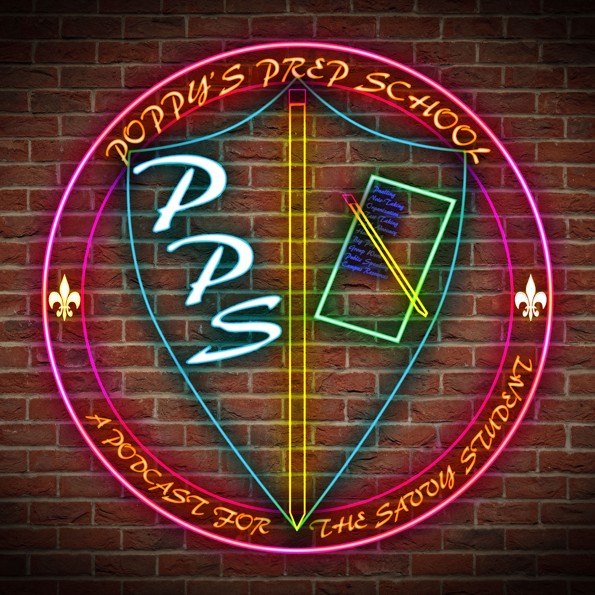

The Podcast for the Savvy Student!
Poppy's Prep School is a weekly podcast centered around the topic of student success
Join me every week as we talk about the art of being a great student!

I'm Val, native Minnesconsinite (Wisconsin+Minnesota for those of you who don't know), proud goof-off, sister, girlfriend, avid dog and cat person and academic coach of three years.
And you know what? I love my job! I love getting to help so many amazing college students reach their fullest potential! But it's more than that. I've lived it. From time management to organization to test taking and note taking, I was the captain of the SS Collegiate Struggle Ship!
Listen. I get it. College is rough!
And now, I've created a podcast so I can help YOU learn the habits, the art, of being a great student!
Want to hear the whole story? Check out Episode One! (Sorry for the bad audio! It has been fixed in Episode Two!)
follow me On Facebook and Instagram!
Got a question? Contact Me!